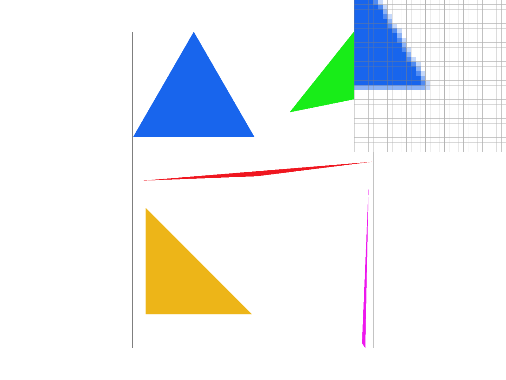
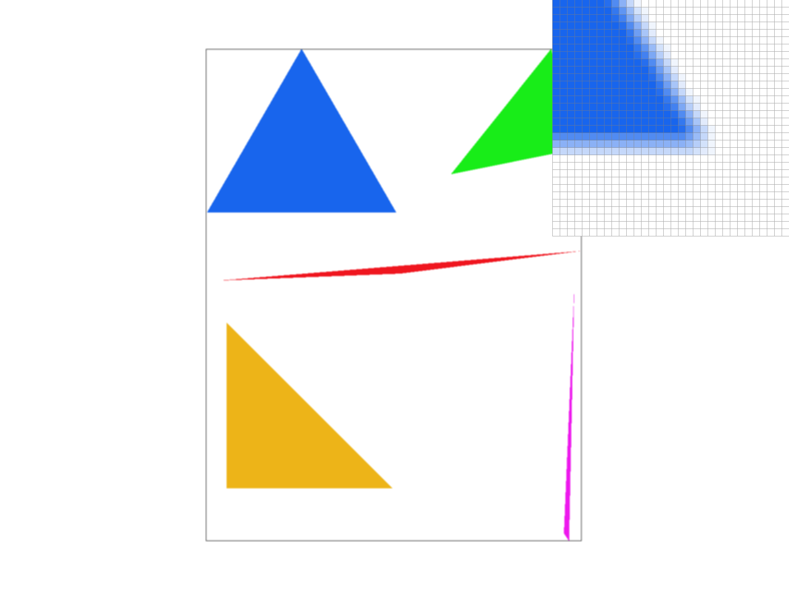
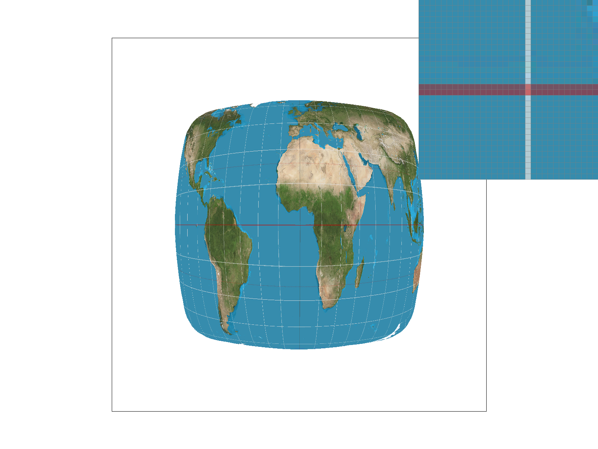
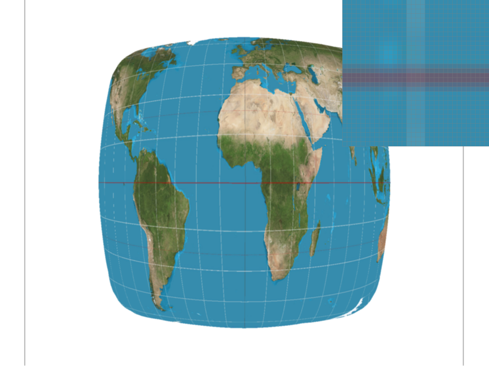
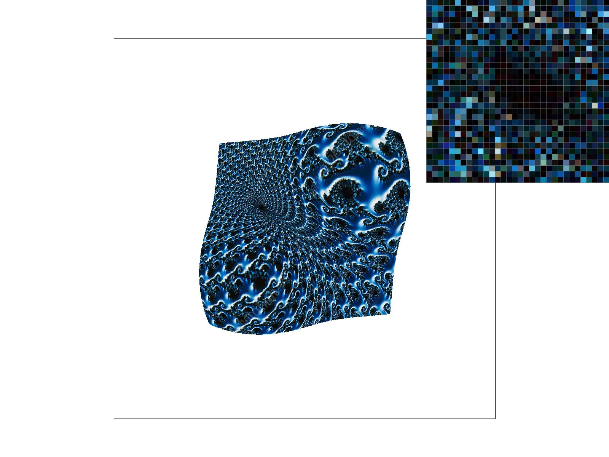

In this homework, I used supersampling, pixel sampling, and level sampling to rasterize triangles and render images. I was able to implement antialiasing and higher resolution to svg input files, and I mapped textures to objects using texture mapping. I found it interesting to discover the various sampling techniques that are used in computer graphics, and implementing these techniques myself gave me a better understanding for how they work.
Drawing Single-Color TrianglesI rasterized my triangle by calling the draw_rasterize_triangle function for every triangle defined in the svg file. The draw_rasterize_triangle function takes in the x and y points for three points of the triangle as well as the color the triangle. To rasterize the triangle, I found the minimum value and maximum value for the x and y coordinates I took in as arguments, and I looped through all the pixels in the box formed by these points (e.g. (min(x), min(y)), (min(x), max(y)), (max(x), max(y)), (max(x), max(y))). In this loop, I checked whether the x and y coordinates were inside the triangle by calling the inside function, which takes in the x and y coordinates as well as all the points of the triangle. I made sure each of these points was added with 1/2 so that the triangle checks the middle of the pixel instead of the edge. The inside function assumes the triangle is being drawn clockwise in order of the arguments it is given, so I needed to reverse the order of the arguments to account for the counter-clockwise case and check whether the point was inside either of these two cases. If the point is inside, I call the fill_pixel function with arguments x, y, and color. This will fill the pixel at x,y with its respective color.
To optimize my algorithm, I implemented parallel thread computing using OpenMP over the double for loop surrounding fill_pixel. This allows different threads to compute different parts of the for loop in parallel rather than having one thread compute the entire for loop naively in order. By using clock() function, I was able to compute the time it took to run my algorithm with parallelism vs without parallelism, I found the empirical mean of my algorithm with parallelism is 566.56 clock ticks per second, while the mean without parallelism is 833.21. By implementing parallelism, I was able to speed up my algorithm by a factor of about 1.5x.
Antialiasing by SupersamplingSupersampling is creating a sample buffer larger than the framebuffer in order to get more accurate pixel coloring, then resolving this sample buffer to the actual framebuffer. It is useful because it allows us to represent photos in our frame buffer with higher accuracy. Supersampling often has a rate, which defines large we want our sample buffer to be, and, in turn, how much accuracy we will have in our pixel coloring. In order to implement supersampling, I needed to change the sample buffer size, and this meant changing values in fill_pixel, rasterize_triangle, set_sample_rate, and resolve_to_framebuffer, since the sample buffer affects all of these functions. I adjusted all the sample buffers in these functions to scale by the sample rate. To resolve the sample buffer to the frame buffer, I needed to take the average color of the sample pixels corresponding to a frame buffer pixel and write that average color to the frame buffer pixel. Specifically on the edges of any object that is drawn to the frame buffer, supersampling will fill the color of the edge of the object with the average of colors surrounding that edge rather than the color of the object. In the example below, we can see how the blue edge of the triangle is not pure blue, but an average between the blue object and the white background. This reduction of jagged edges is called antialiasing. Antialiasing on the edge of the blue triangle is shown below for sample rate values of 1, 4, and 16 respectively from left to right.
  TransformsFor task 3, I changed my robot to be a referee that is signaling a field goal is good. In order to do this, I rotated its forearms by 90 degrees, translated its forearms to fit better with the upper part of the arm, filled in all of the robot to be black instead of red, and put white stripes on the robots torso in the form of white polygons.
In terms of triangles, barycentric coordinates tell us how far away a point is relative to the vertices of that triangle. Barycentric coordinates are comprised of three different scalars: alpha, beta, and gamma. Each scalar tells us how far away the point is from a specific vertex. Taking the example below on the left, we can think of alpha as the color red, beta as the color blue, and gamma as the color green. Without loss of generality as we get close to the red vertex on the bottom left, the alpha value gets larger until eventually the alpha value is 1 and the beta and gamma values are both 0. At the center of mass of the triangle, called the barycenter, all the vertices are equidistant, and alpha, beta, and gamma are all 1/3. By giving us distance values from each vertex, barycentric coordinates allow us to represent things like color gradients across a triangle when each vertex is a different color. The bottom circle is the rainbow circle I rendered using my program.
Pixel sampling is taking a set of pixels from an image and using them to represent that image. Pixel sampling can be a one to one mapping of pixels from the image to represent it in the frame buffer, or it could supersampling, where more samples are taken than are present in the original image and the sample buffer is resolved to the frame buffer by taking the average of the extra pixels. In texture mapping, we sample the pixels present in a texture and apply those textures to a surface. We do this by taking the barrycentric coordinates of every pixel in every triangle we want to render to our frame buffer, and we apply these barrycentric coordinates to the vertices of every triangle in the texture map. This effectively maps every triangle in the frame buffer to every triangle in the texture map. The resulting pixel in the texture map is a continuous variable, since the frame buffer is likely either larger or smaller than the texture map by a scalar that is not an integer. In order to resolve this continuous variable into a discrete variable, we can either perform nearest or bilinear pixel sampling. In nearest pixel sampling, we take the discrete pixel on the texture map that is closest to our continous variable and represent our pixel as this discrete pixel. In bilinear pixel sampling, we take the linear interpolation of the continous variable with respect to the four nearest pixels around it, and we use that pixel to represent our continous variable.
Below are examples of nearest and bilinear pixel sampling, both with a supersampling rate of 1. The image on the left uses nearest pixel sampling, and the image on the right uses bilinear pixel sampling. As shown, the image on the left does not have a connected longitude line, while the image on the right does. This shows how bilinear pixel sampling could give a better representation of a texture compared to nearest pixel sampling.
Below are examples of nearest and bilinear pixel sampling, both with a supersampling rate of 16. The image on the left uses nearest pixel sampling, and the image on the right uses bilinear pixel sampling. As shown, both the nearest and bilinear pixel sampling have connected longitutde lines when combined with a supersampling rate of 16, and both images appear clearer than the images that used a supersampling rate of 1.
From these images, we can conclude that there is a largest difference between using nearest pixel sampling with a supersampling rate of 1, and using bilinear pixel sampling with a supersampling rate of 16. This is because while nearest pixel sampling and a supersampling rate of 1 are less computationally intensive, they are also naive implentations that trade accuracy for a less computation. Bilinear pixel sampling and supersampling rate of 16, on the other hand, are two more computationally intensive techniques, but they both take the averages of the pixels around them to make up for the fact that the texture and frame buffer are not 1 to 1 mappings. Though this takes more computation, it adds more information to what the true color of the pixel should be, and it results in a more accurate image.
"Level Sampling" with mipmaps for texture mappingLevel sampling is the concept that in order to have an image of adequate resolution, it is not necessary to have full resolution of a texture. The various downsamplings of a texture are called levels, and there exists a level D that will give us an adequate resolution for a given texture. In order to find this level D, it is necessary to take the maximum between the euclidian norm of the texture coordinates with respect to x and the euclidian norm of the texture coordinates with respect to y. After finding this level D, I passed it in as the size of my mipmap so the mipmap is only as large as necessary to get the highest resolution possible.
In terms of the number of samples per pixel, the largest the number of samples there are, the slower the speed is (the more computationally intesive it is) and the higher the antialiasing power is. For pixel sampling, nearest pixel sampling is faster but less powerful in antialiasing, and bilinear sampling is slower but more powerful in antialiasing. In level sampling, the lower the level is, the larger the map is. This means the lower the level, more space it takes up, the more defined the image is, and the lower the power of antialiasing is.
Below is the the image of a fractal computed using 4 different filter combinations. From top to bottom, the filter combinations are level zero and nearest pixel sampling, level zero and bilinear pixel sampling, nearest level and nearest pixel sampling, and nearest level and bilinear pixel sampling. Image labels are below their respective images.
